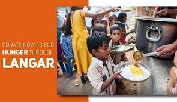
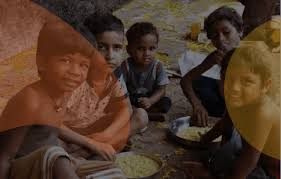
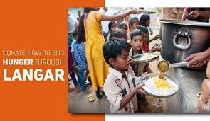
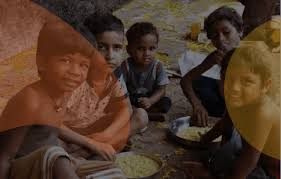
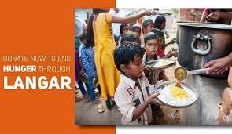
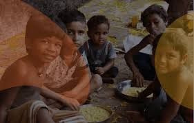

Gallery

 



Langar for Hunger is a non-profit organization dedicated to providing free meals to those in need. Inspired by the Sikh tradition of Langar, we aim to alleviate hunger and promote community solidarity through shared meals.
Our mission is to ensure that no one goes hungry and to foster a sense of community and support among all people. We believe in the power of food to bring people together and create positive change.
We envision a world where everyone has access to nutritious meals, and communities are united in their efforts to support each other. Through our programs and initiatives, we strive to make this vision a reality.
Founded in 2020, Langar for Hunger has grown from a small volunteer-run initiative to a significant force for good in our community. Over the years, we have served thousands of meals and have expanded our reach to support more individuals and families.
Founder & CEO
Operations Manager
Volunteer Coordinator
Volunteer Coordinator 2
Langar for Hunger was founded by John Doe with the mission to provide free meals to those in need.
We opened our first community kitchen, serving over 1,000 meals in the first month.
We expanded our services to include educational workshops and food drives, reaching more families in need.

